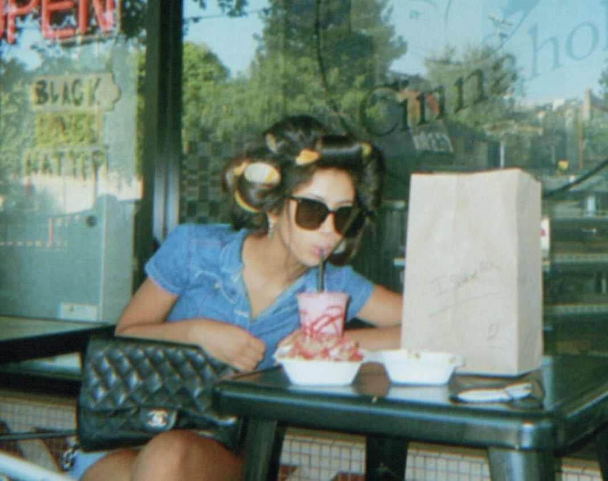
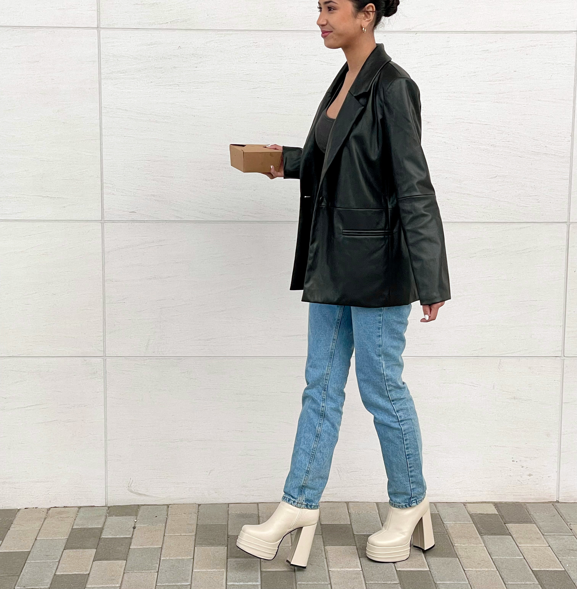
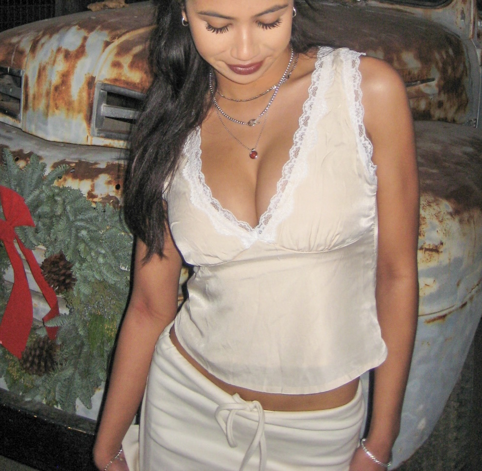
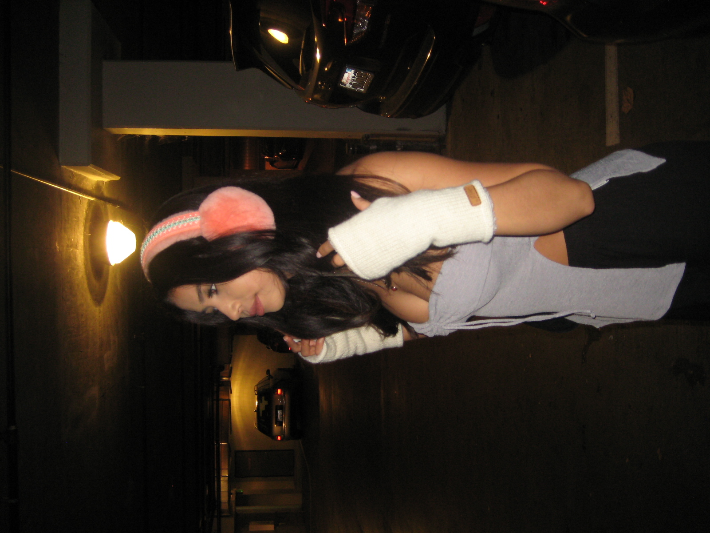
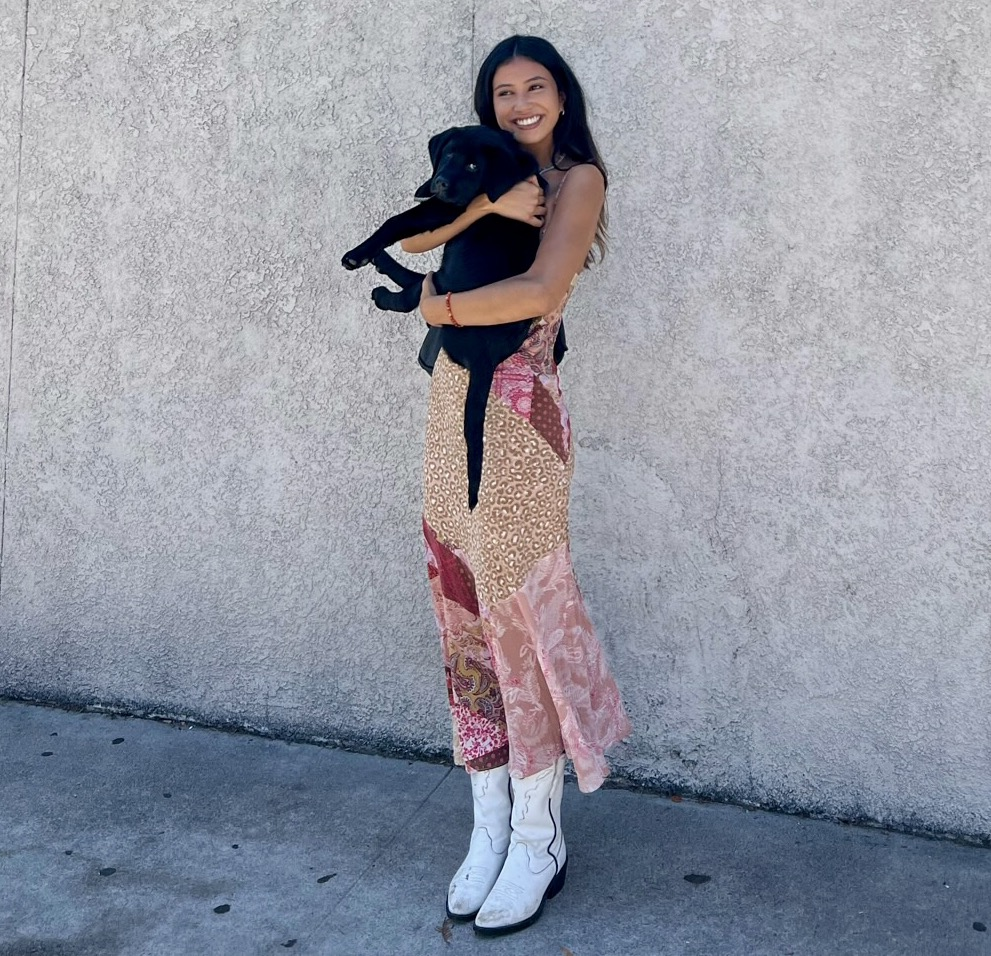

Happy to have you! I'm Lily - creator and strategist working at the intersection of fashion, tech, and storytelling. I'm a recent college graduate in my twenties with a variety of passions all around. During my suburban upbringing at the heart of the East Bay Area in California, I have been fortunate enough to unveil two of my greatest interests: mathematics and fashion. While seemingly unrelated, I hope to one day intertwine my interest in technology, along with all aspects of STEM, in the fashion industry. Moreover, I hope to one day initiate greater momentum in dismantling the fast fashion industry, in order to create a more equitable environment.
In my spare time, I enjoy the company of friends and family. With a strong support system in the Bay, I nervously committed to California Polytechnic State University, San Luis Obispo. It was here that I stumbled upon my new home, a place that allowed me to express my most authentic self, identity, and perspective. Between pursuing a degree in Mathematics, serving on the Executive Board of my sorority, and gaining priceless on-hand experience, I have created bonds with the people I now consider a second family.
Currently, I live in the Bay Area, but look for any and every opportunity to visit my brother in New York City. I'm building go-to-market and content strategies for a B2B SaaS startup, as well as working with a venture studio. All while exploring fashion technology and creative brand partnerships, I also love to travel. Traveling has always been an outlet of inspiration for me, beginning with intermittent trips to Kuala Lumpur, Malaysia, my parents' native country. With family located around the world and exposure to a number of countries in Europe as well as Asia, I have been fortunate enough to diversify my mindset. This has ultimately fired a passion to embrace new cultures with an open mind and heart. To discover more, take a look at my Academics and Work Experience below.
After graduating from Dougherty Valley High School in 2020, I wasn't exactly sure what I wanted to study. I had always loved math, but I was also drawn to creative industries—marketing, design, sustainability, tech. I chose Applied Mathematics at Cal Poly SLO because it felt like the right foundation: logical, flexible, and surprisingly creative if you look at it the right way.
In 2021, I landed an internship at StreamLoan, a mortgage tech startup in San Francisco. I joined as a QA and software engineering intern, where I helped test new product features, worked across teams to support launches, and built internal tools like an ROI calculator. It was my first real taste of working in tech—scrappy, collaborative, and fast—and I loved being part of something being built from the ground up.
I also explored tech outside the classroom, attending EY's Women in Tech conference and a Microsoft hackathon where I prototyped for the HoloLens. These moments reminded me how much I enjoy working on things that blend creativity, technology, and people.
Today, I work at a venture studio, and I support go-to-market and content strategy for a B2B SaaS startup in the DevOps space. I run marketing experiments, help shape product messaging, and think a lot about how to connect with niche audiences in a way that feels human. It's fast-paced, cross-functional, and always evolving—which feels just right for now.
Previously, I served as the Vice President of Diversity, Equity, and Inclusion for Alpha Phi - Epsilon Chi. I take pride in the position to create a welcoming environment for all individuals, both members and non-members in our community.
During my first-year in college, I was thrown into a sea of unprecedented times (Coronavirus pandemic). It was hard enough navigating my academics and emerging identity, but I found community in my Greek organization. I prioritized making others feel safe and comfortable at Cal Poly since I knew how difficult it can be.
I was appointed Director of Social Media for 2020-2021, where I managed the media and marketing presentation of our organization and was awarded Outstanding Social Media by Alpha Phi International. I wanted to grow my impact on my campus, so my sophomore year, I ran for Vice President of Diversity, Equity, and Inclusion. After I was elected, I joyfully implemented new and simple practices to help us adapt to the current status of the world we live in. I believe honest and transparent education is the key to proactivity.

Here's a glimpse of my work with brands and my latest content:
Me + My Beloved Closet
From the ripe age of 13 years old, there was only one thing I loved more than makeup (and above all other things beauty related) - my expression of creativity through videos and editing. So, I did as many other middle schoolers did, and created an Instagram to explore:
@LilyAdlin.Makeup
And soon enough, a video of mine was reposted by a large account, garnering over 300,000 views. Keep in mind, that this was "viral" in 2016, at least it was for me. I continued to upload 30 second edited Instagram videos (reels before reels were a thing), and accumulated 17,000 followers. Now it was time to expand my brand to YouTube.
By the time I was halfway through high school, it became clear to me that as much I still enjoyed doing makeup, broadcasting it on a platform awaiting constant critique inevitably took a toll on my mental health. So I took a break. In this break, I began creating YouTube "vlogs," or edited recap videos from my vacations or in my daily life - You may have come across my "Day at a California Public High School" vlog that amassed nearly 1 million views.
I began collaborating with companies like E.L.F. Cosmetics, Princess Polly Boutique, White Fox Boutique, and Curology on brand deals that helped elevate my audience reach, and in return, promote their product.
As I entered college, I was not only switching my major to mathematics, but struggling to find my identity and what I truly cared about. So I applied for Director of Social Media for my sorority. To my surprise, I was appointed the position and even ended up being awarded Outstanding Social Media at the Alpha Phi International Leadership Conference. Through this position, I was not only able to develop my social media and marketing skills in a new setting, but I discovered my passion of fostering a safe and inclusive community - which I am now able to do on a greater scale as Vice President of Diversity, Equity, and Inclusion.
I already mentioned my internship at StreamLoan a few summers ago, but the scope of my responsibilities reached beyond maintaining products and exposure to back and frontend engineering. I also worked on their marketing team, to help with fluidity throughout the company's numerous applications, and of course to help elevate their social media pages.
I've been collaborating with Princess Polly Boutique to create fashion and lifestyle content with them since 2020, and they're now sold in Nordstrom. I continue to be sponsored by them because I like how they provide sustainable options, and to me quality and material are a priority. Here are some looks which illustrate how I work with brands and content:








Academic/Internship Inquiries: lilyadlin1@gmail.com
Business/Collaboration Inquiries: lilyadlin.makeup@gmail.com


© 2024 Lily Marie Adlin